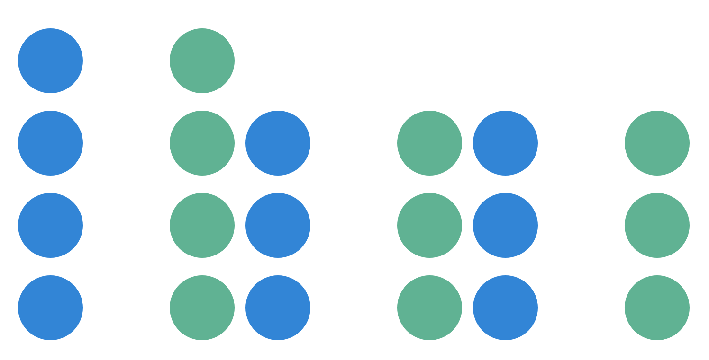

Whether experienced as a passive delight or a nostalgic mental excursion, music has the ability to arouse emotion in its listeners. Some may say that it has come to serve as a reliable mood regulator, given that its digitization has made available at our fingertips.
The creation of this touchpoint linking humans to the world of music has initiated a competition within the market, urging music streaming services to develop progressively more unique methods of deliverance. Prevalent companies such as Google, Apple, and Spotify are consistently adjusting their algorithms in an attempt to attract the largest user audiences.
As researchers investigating the UX of music streaming, our goal is to understand both the delightful and the troubling aspects of the current experience. How does one's chosen music streaming application affect the way they think or feel? How does it interact with their behaviour? What makes one streaming service more desirable than another?
After a few collaborative brainstorming sessions, our team decided on the following research questions:
1) What is your favourite and most consistently used feature on your music streaming application?*
2) When did you find yourself using the feature most frequently today? Morning, afternoon, or evening?
3) Has the feature changed your mood today? If yes, was the change positive or negative?
4) If you could make changes to your experience with the feature today, what would it be?
* Day one only
02. Data Collection

With the exception of day one, each participant answered three questions, once a day, for three days straight. Questions were delivered via Google Forms in early December.
We were fortunate to receive full participation from our three volunteers, providing us with a total of 30 data points to analyze.*
* After cleaning up our data
03. Data Analysis

As a group, we reviewed our participants’ responses in order to determine whether or not any data should be excluded. While our participants appeared to understand each question and respond appropriately, we realized that an error had been made on our part-- our initial research prompt (question one), had been sent out every day. This meant that instead of receiving three responses for question one, we received nine.
To remedy the issue, we focused on these nine responses and grouped them in terms of similarity. Ideally, we would have been able to create a 3x3 matrix, but we were happy to see that for the most part, participants remained consistent with their reporting:
We agreed that there were three distinct data-points that captured the users’ responses, and excluded six erroneous variables, thus resulting in a total of 3--instead of 9--data points.
05. Data Synthesis

Now that our team had a clean dataset, we were ready to begin sorting through our users’ responses and synthesizing the information. For this diary study, we organized our data using an affinity mapping technique.
To begin, we individually composed insights and common themes that arose from our analyses. Then, using sticky notes, we pasted our findings on a board and chose one sticky at random for a starting point.
One note at a time, we shared whether we had recorded similar insights until we were left with a cluster of four themes, and two outliers:
06. Expanding on Themes
Click below to explore our insights and learn more about our users' needs and frustrations.
| Users desire custom music recommendations |
Users are frustrated that they can't access music offline |
Users access their music apps day and night |
Listening to music generally improves mood |
Outliers |
Many of our participants voiced a predilection for applications that compute music suggestions based on existing libraries. Such a feature could save time for users wanting to access familiar music without mental exertion. Companies thus may benefit from strengthening the scope and validity of their suggestive algorithms.
07. Reflection

This project taught our team that even on a small scale, user data can provide meaningful feedback and inspire avenues for future research. We also learned (the hard way) the importance of planning-- it was only post data-collection that we realized there had been an error in our output. This obstacle presented our team with an opportunity for collaborative problem solving to protect the validity of our study
If given the opportunity to start again from the beginning, our team would likely craft our research questions more carefully. It may have been helpful to spend more time reflecting on how we, ourselves,would answer the questions, and what kind of insight these answers could provide. For instance, we asked users what time of day they use their favourite feature most frequently without considering why we were asking this question. Focusing too much on high level concepts included in the research prompt (i.e. explore the “user behaviour”) may have foiled our ability to truly take the user into account during the preparation process.